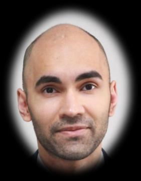
Currently completing an advanced endoscopy fellowship in EUS & ERCP at Singapore General Hospital. Trained across Australia and Japan in therapeutic luminal and hepatobiliary endoscopy.
Dr Hardesh Dhillon is an Interventional Gastroenterologist currently completing a third advanced endoscopy fellowship year at Singapore General Hospital, focusing on EUS and ERCP at one of Asia's leading quaternary centres.
His training spans Australia and Japan — including a JSGE-scholarship-funded fellowship at Kyoto Prefectural University of Medicine and advanced endoscopy roles at Northern Health, Barwon Health, and Monash Health — building competency across general gastroenterology and all major therapeutic luminal and hepatobiliary procedures.
He is an active researcher with publications in peer-reviewed journals and a strong international conference presence, including oral presentations at the Australian Gastroenterology Week.
EUS/ERCP Fellow · Singapore General Hospital
Singapore, Australia
MBBS (Hons) & BMedSc (Hons) · Monash University
FRACP · Royal Australasian College of Physicians
dhillonhardesh@gmail.com
Japanese Society of Gastroenterology scholarship for ESD fellowship at Kyoto Prefectural University of Medicine
Best clinical abstract award at the United European Gastroenterology Week, Copenhagen
Monash University Faculty Award — MBBS (Honours) 2012–2016
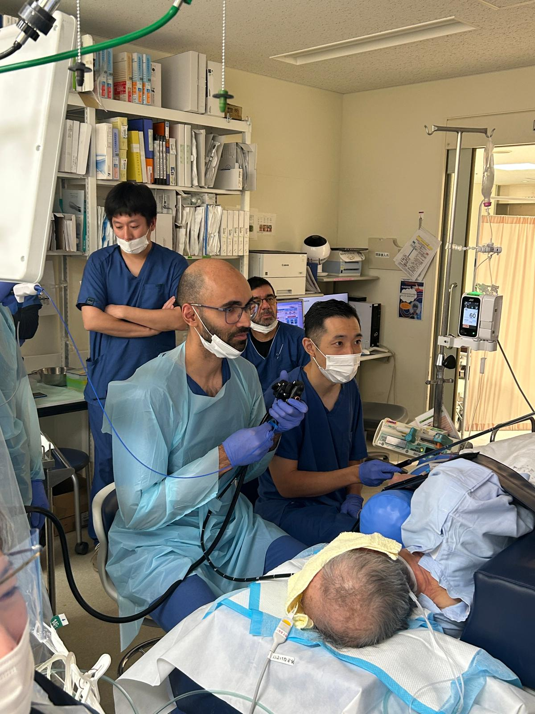
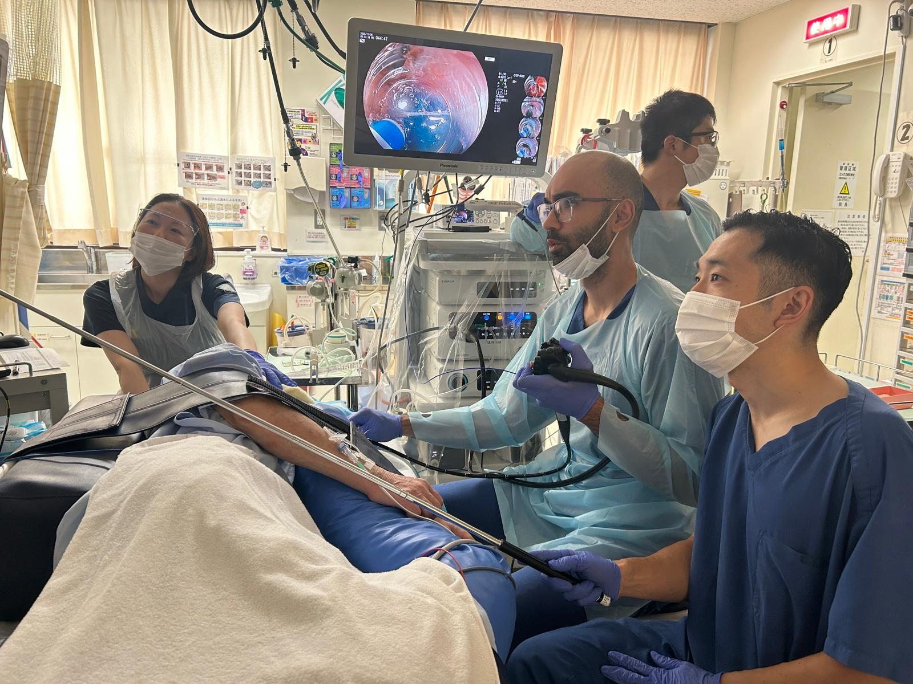
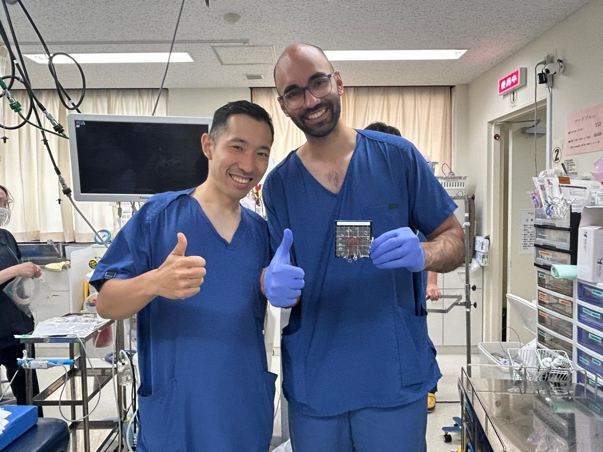
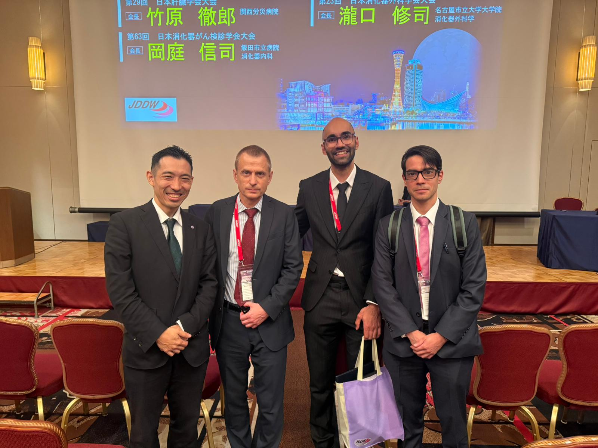
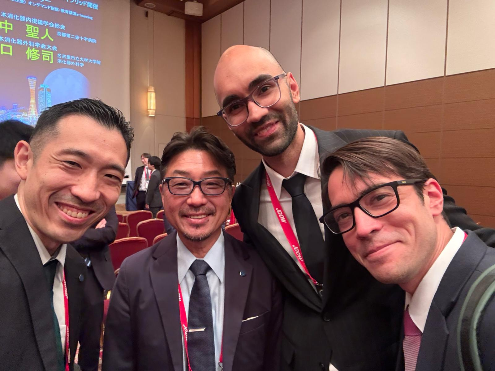
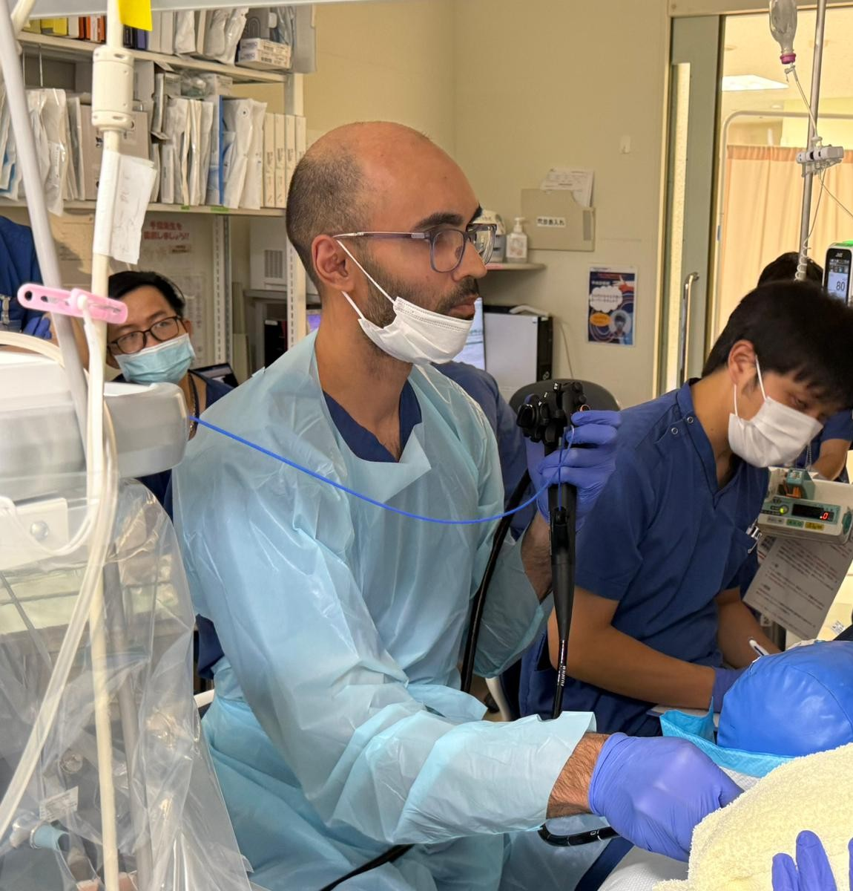
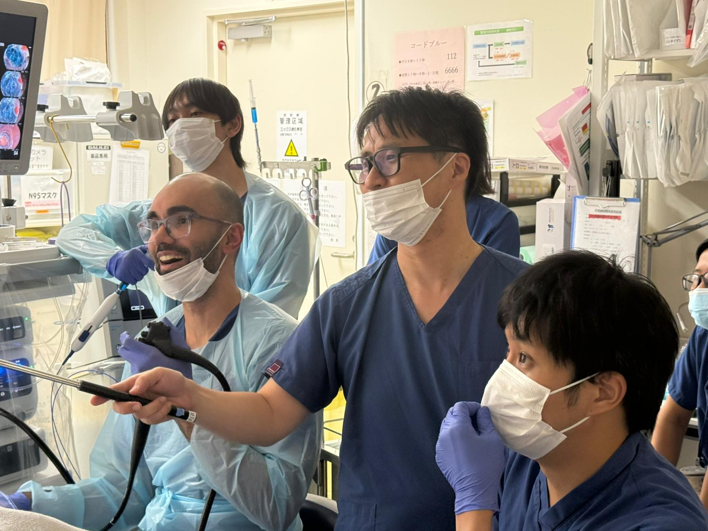
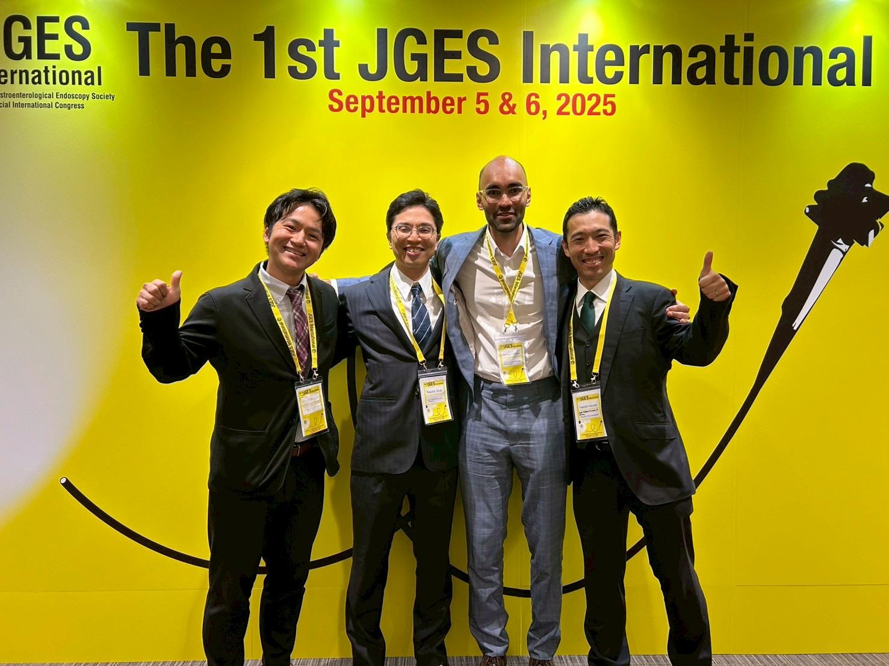
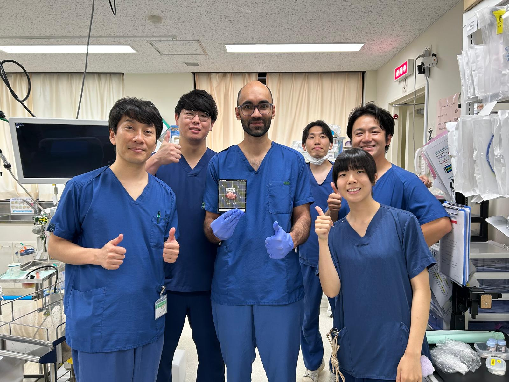
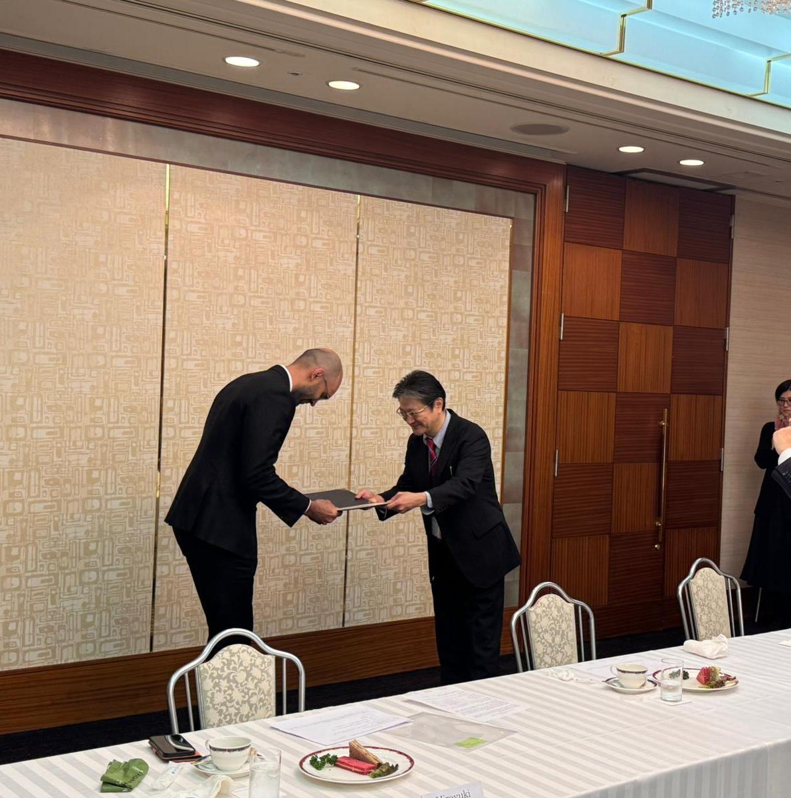
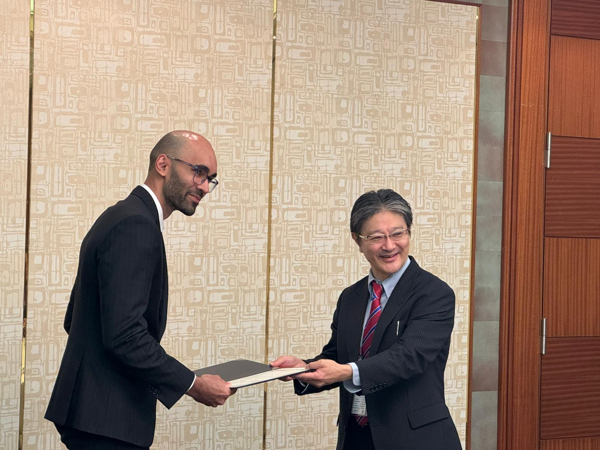
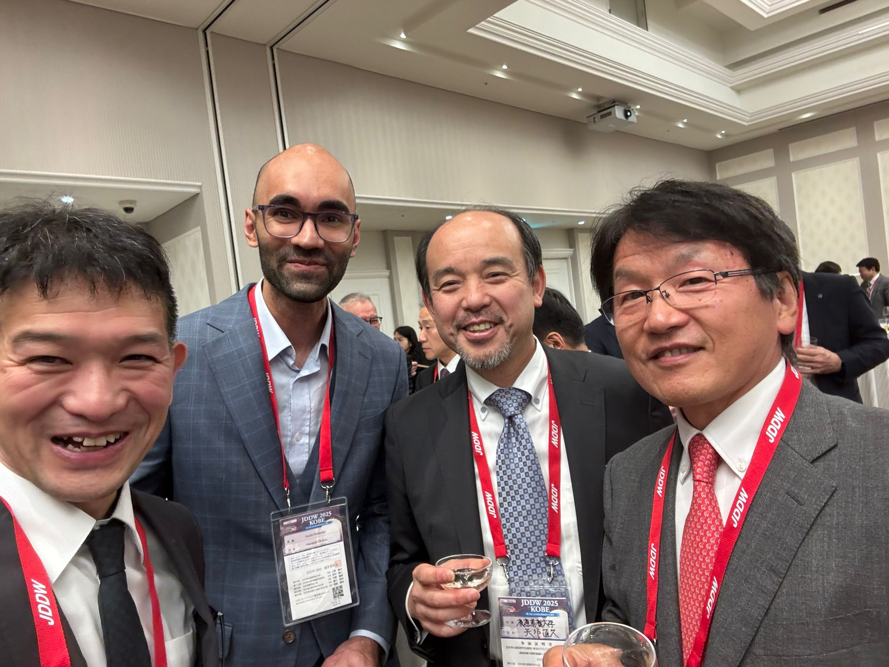
Open to academic collaborations, fellowship enquiries, and speaking opportunities.